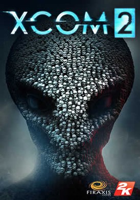
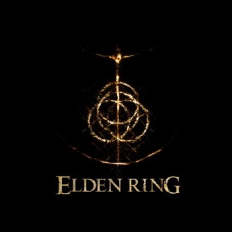
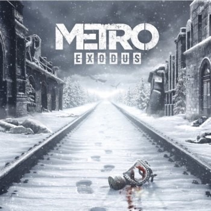
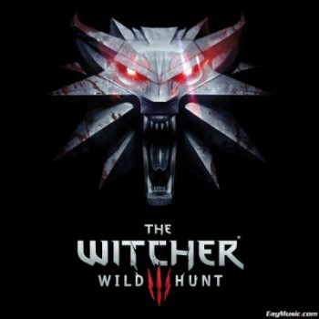
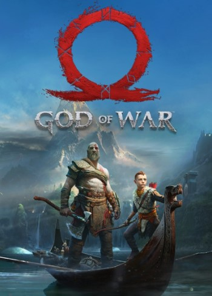

Топ 5 лучших игр, в которые стоит поиграть
5 место: XCOM 2

| ОС: | Windows 7 и выше (только x64) |
| Процессор: | Intel Core 2 Duo E4700 2,6 ГГц | AMD Phenom 9950 Quad Core 2,6 ГГц |
| Оперативная память: | 4 GB |
| HDD: | 45 GB на жестком диске |
| Видеокарта: | Nvidia GeForce GTX 460 | AMD Radeon HD 5770 с 1 ГБ памяти |
4 место: ELDEN RING

Elden Ring является фэнтезийным ролевым экшеном в новой вселенной с чудесами, опасностями и тайнами за каждым углом. Разработчики говорили о ней так: «Мы хотели создать новую ролевую игру в жанре темного фэнтези, полную вещей, которые мы не могли делать в серии Dark Sools». Учитывая, что над проектом работал Джордж РР Мартин и Elden Ring продался тиражом в более 12 миллионов экземпляров примерно за 2 недели, это не является неправдой.
В игре разрешено быстро перемещаться по большому открытому миру на маунте, можно наблюдать атмосферные локации, множество секретов, гигантских боссов и NPC. Также есть non target боевая система с возможностью выделить цель, магические заклинания, разнообразное оружие с навыками и конечно же уклонение, как в любой другой соулслайк игре. Но в отличие от них, в Elden Ring больше внимания уделено именно ролевой части.
Это значит, имеется широкий спектр вариантов разборок с врагами, планирование стратегии и выбор стиля боя, который подходит именно вам. Кроме того, присутствует создание персонажа с нуля в редакторе и последующая кастомизация собственного героя для придания уникальности происходящему. Авторы сообщают, что как и другие игры FromSoftware, такие как Bloodborne и Dark Sools, Elden Ring соответствует этим проектам с точки зрения сложности.
Самым большим отличием от прошлых игр является открытый мир Elden Ring, предлагающий больше свободы для исследования. «Elden Ring, без сомнения, самая большая игра с точки зрения объема», — сообщили разработчики.
| ОС: | Windows 10, 64 bit |
| Процессор: | Intel Core i7-4770K / AMD Ryzen |
| Оперативная память: | 8 GB |
| HDD: | 150 GB на жестком диске |
| Видеокарта: | Nvidia GeForce GTX 770 2GB / AMD Radeon R9 280 |
3 место: METRO EXODUS

Metro: Exodus - это сиквел Metro: Last Light, события которого разворачиваются в постапокалиптическом мире. Игра продолжает сюжет предыдущей части, позволяя выжившим покинуть постъядерную Москву. На паровозе под названием "Аврора" Артем и его товарищи отправляются в огромный мир, наполненный приключениями и опасностями, чтобы найти новый уголок, пригодный для жизни.
В отличии от Last Light, Exodus предлагает игрокам не просто коридорные локации, но ряд огромных открытых локаций, которые связаны между собой сюжетом. Каждая локация предлагает игрокам свои уникальные испытания, врагов и условия, кроме того, каждая из них имеет важное влияние на сюжет. Тем не менее, Metro - не S.T.A.L.K.E.R., поэтому перемещаться по локациям взад-вперед нельзя - Артем может двигаться только вперед по сюжету, поэтому возвращаться на старые локации нельзя.
| ОС: | Windows 7/8/10 |
| Процессор: | Intel Core i5-4440 |
| Оперативная память: | 8 GB |
| HDD: | 59 GB на жестком диске |
| Видеокарта: | GeForce GTX 670 / GeForce GTX 1050 / AMD Radeon HD 7870 |
2 место: THE WITCHER 3: WliD HUNT (Со всеми дополнениями)

The Witcher 3: Wlid Hunt — это сюжетноориентированная ролевая игра нового поколения, действие которой разворачивается в открытом и потрясающе красивом фэнтезийном мире, полном сложных решений и масштабных последствий. В «Ведьмаке» вы играете роль Геральта из Ривии, члена вымирающей касты охотников на монстров. Вам предстоит отправиться в эпическое приключение в опустошенный войной мир и столкнуться с врагом, страшнее которого человечество еще просто не знало — Дикой Охотой.
Мир в огне. Армия империи Нильфгаард стирает все на своем пути, стремясь поскорее добраться до самого сердца северных королевств. Геральта из Ривии преследует враг, не знающий пощады, — Дикая Охота, мистическая кавалькада призрачных всадников, предвестников рока и гибели, способных уничтожить целое поселение всего за одну ночь. Движимый личными мотивами герой должен найти и защитить от сил зла некую особо, о которой говорится в древнем пророчестве. Жесткий и безжалостный мир, который вам предстоит исследовать, задает новые стандарты по части размера, сложности экосистемы и нелинейности. Станьте свидетелем реалистичной смены дня и ночи, а также погодных условий, которые оказывают сильное влияние на весь геймплей. Подчините себе окружающую среду, используя тайные знания Ведьмака.
Развивайте уникальные навыки ведьмака таким образом, чтобы создать тот игровой опыт, который больше всего подошел бы именно вам. Охотьтесь на кровожадных монстров и разработайте свою уникальную стратегию ведения боя, используйте мощные заклинания и приведите своего героя к победе в этом полностью безграничном мире. Гуляйте, плавайте, катайтесь верхом или рассекайте моря на судне. Выполняйте легендарные задания и получайте эпические богатства. Возьмите под контроль абсолютно все: отправляйтесь куда захотите и делайте то, что сочтете нужным!
| ОС: | Windows 7 SP1 / 8 / 8.1 (только x64) |
| Процессор: | Intel Core i5-2500 3,3 ГГц | AMD Phenom II X4 940 3,5 ГГц |
| Оперативная память: | 6 GB |
| HDD: | 40 GB на жестком диске |
| Видеокарта: | Nvidia GeForce GTX 660 | AMD Radeon HD 7870 с 2 ГБ памяти |
1 место: GOD OF WAR (2018)

Четвертая часть популярной серии God of War представляет собой своеобразный перезапуск и сиквел одновременно. Камера изменилась на фиксированную от третьего лица, боевая система была полностью переработана, а за основу в этот раз взята скандинавская мифология. Также отличительной особенностью новой игры является наличие сына Кратоса по имени Атрей, который по ходу игры будет развиваться вместе с вами и станет полезным союзником главного героя в его приключениях.
| ОС: | Windows 10 64-bit |
| Процессор: | Intel i5-2500k (4 ядра 3.3 GHz) или AMD Ryzen 3 1200 (4 ядра 3.1 GHz) |
| Оперативная память: | 8 GB |
| HDD: | 70 GB на жестком диске |
| Видеокарта: | NVIDIA GTX 960 или AMD R9 290X с 4 GB памяти |